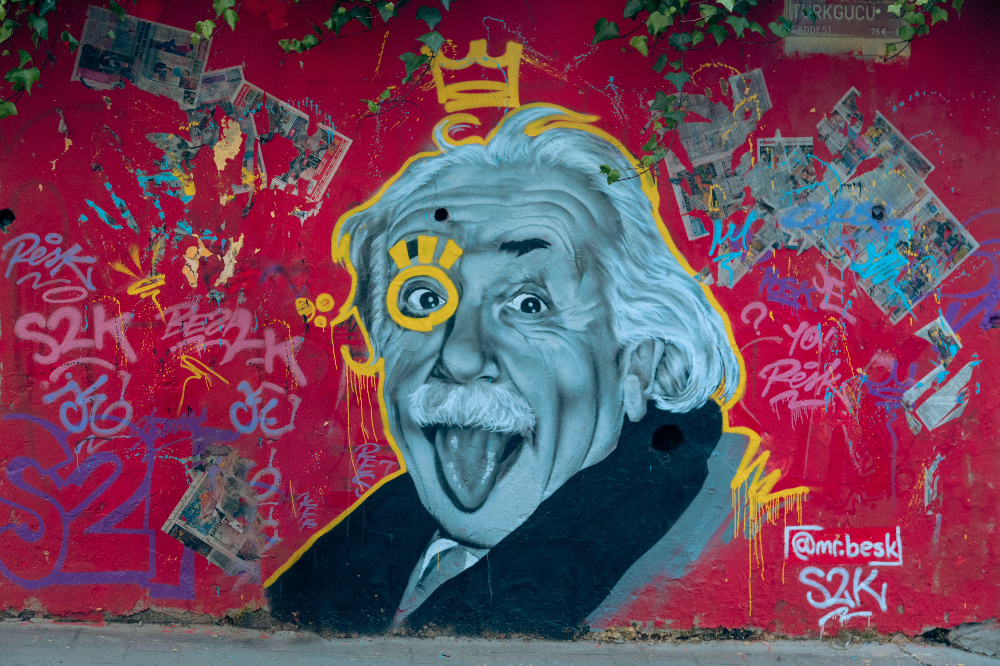

알베르트 아인슈타인(독일어: Albert Einstein, 독일어 발음: [ˈalbɛʁt ˈʔaɪnʃtaɪn], 영어: Albert Einstein 앨버트 아인스타인[*], 1879년 3월 14일 ~ 1955년 4월 18일)은 독일 태생의 이론물리학자로서[1] 역사상 가장 위대한 물리학자 중의 한 명으로 널리 알려져 있다. 상대성 이론을 개발한 것으로 유명하지만 양자역학 이론의 발전에도 중요한 공헌을 했다. 상대성 이론은 양자역학과 함께 현대 물리학의 두 기둥이다.[2] 상대성 이론에서 나온 그의 질량-에너지 등가식 {\displaystyle E=mc^{2}}{\displaystyle E=mc^{2}}은 "세계에서 가장 유명한 방정식"으로 불린다.[3] 그의 작업은 과학 철학에 미친 영향으로도 유명하다.[4][5] 그는 1921년 "이론 물리학에 대한 공로, 특히 광전 효과 법칙의 발견"[6]으로 양자 이론 발전의 중추적인 단계에 대한 공로로 노벨 물리학상을 받았다.[7] 그의 지적 업적과 독창성은 "아인슈타인"이 "천재"와 동의어가 되는 결과를 낳았다.[8] 